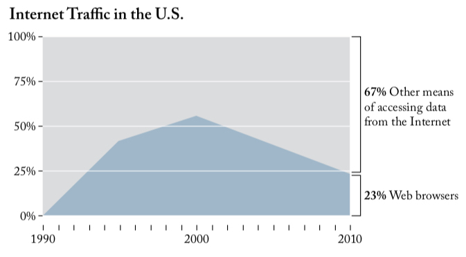
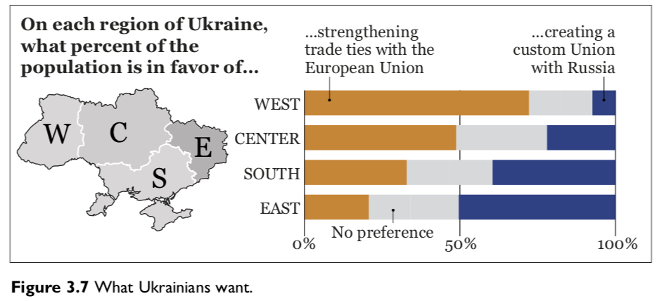

The Truth Continuum (Chapter 3)
“Any visualization is a model.”
–
“The more adequately a model fits whatever it stands for without being needlessly complex, and the easier it is for its intended audience to interpret it correctly, the better it will be.”
class: center, middle

class: center, middle

class: center, middle

class: center

class: center, middle

class: center, middle


–
“Good visualizations shouldn’t oversimplify information. They need to clarify it. In many cases, clarifying a subject requires increasing the amount of information, not reducing it.”

–
“What you design is never exactly what your audience ends up interpreting, so reducing the chances for misinterpretation becomes crucial.”
class: middle, center, inverse
Why Are We So Often Mistaken?